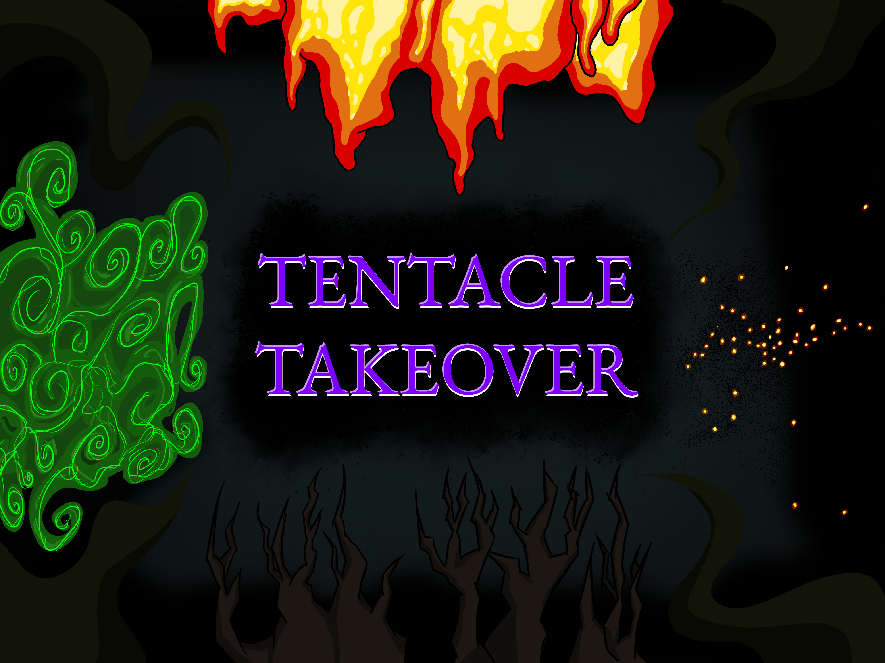
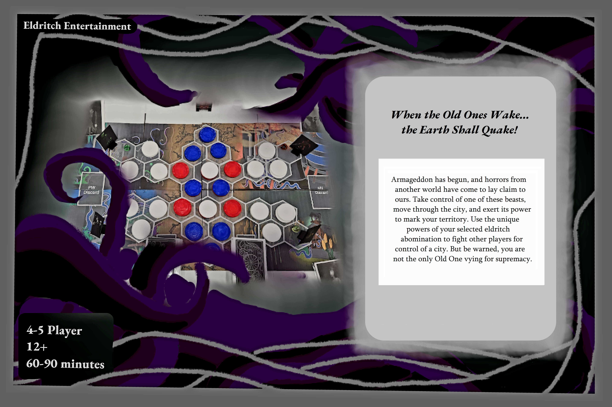
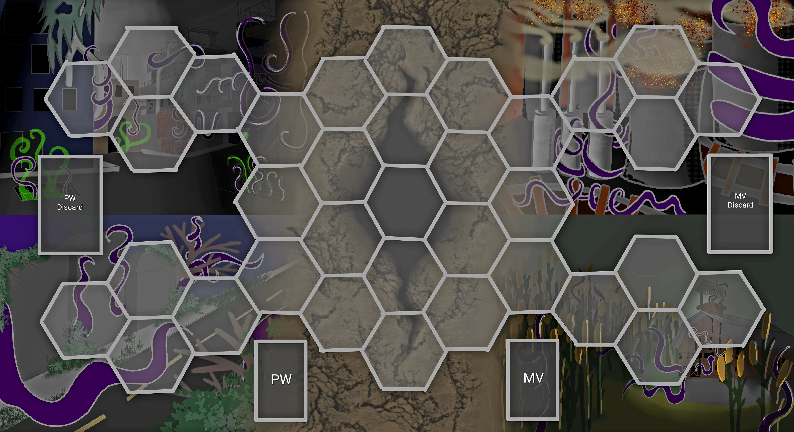
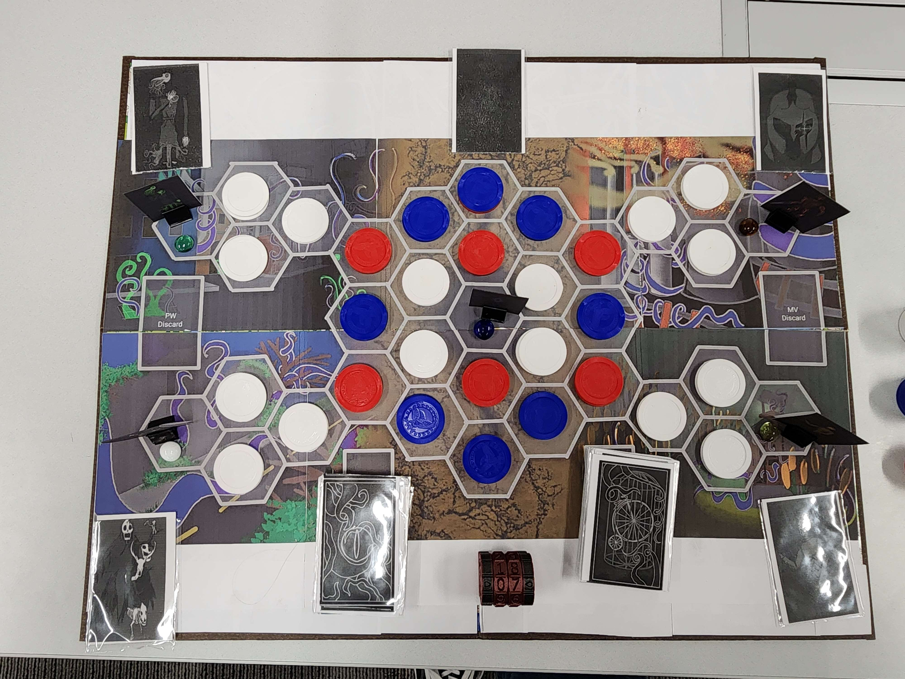
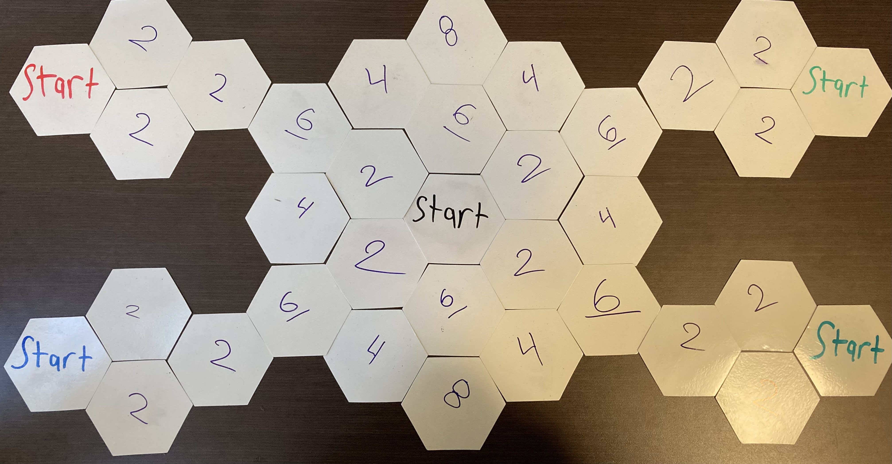
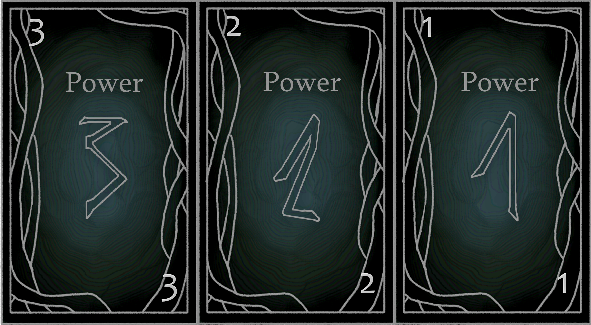
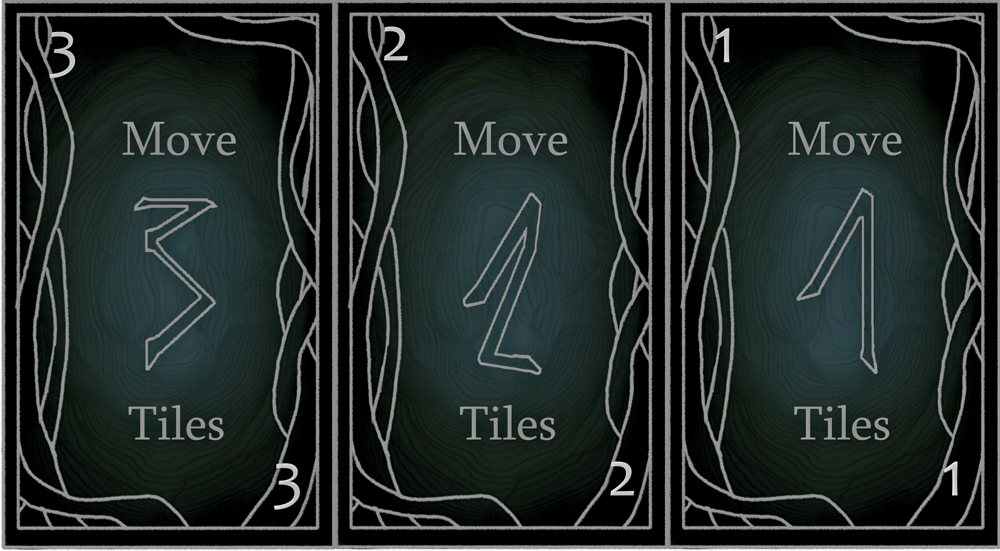
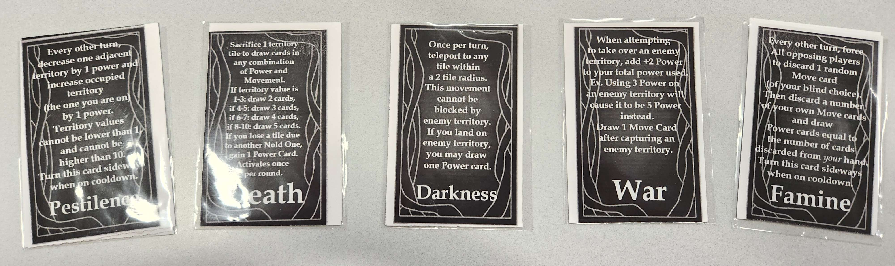

A board game where 2-5 players assume the roles of eldritch horrors competing to conquer a city.
Created as a group project over the course of a semester.
Each player controls a different Old One with a unique ability.
Players take turns drawing cards to move around the board and capture territory tiles.
Players are encouraged to steal their opponent's territory tiles to win.
The game ends after a predetermined number of turns, and the player with the most territory tiles wins.
The game was playtested weekly at the RIT Crash Test night.
Detailed notes were taken during the playtest, and playtesters were encouraged to fill out a survey.
The team kept a living design document and frequently updated rules packet.
My main contributions were to general game balance and updating the rules packet.
I also facilitated many of the playtests, including one outside of course requirements.

The back of the Tentacle Takeover box.

A Tentacle Takeover board for 5 players.

The start of a Tentacle Takeover game

The prototype 5-player Tentacle Takeover game board.

Power Cards for Tentacle Takeover.

Movement Cards for Tentacle Takeover

Ability reminder cards for Tentacle Takeover.